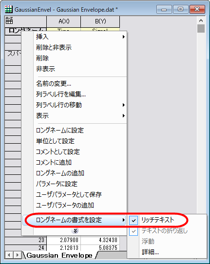
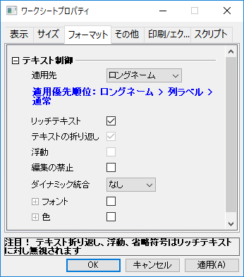

FAQ-477 ワークシートのヘッダ行にリッチテキストを入力する方法
RichText-for-Wksheader
最終更新: 2018/07/13
上付き文字や下付き文字といった特殊な文字を単位などの列ラベル行で表示するには、ワークシートのヘッダ行においてリッチテキストを有効化する必要があります。リッチテキストを有効にするには、以下の2通りがあります。
- 列ラベル行をクリックして選択し、右クリックしてコンテキストメニューからリッチテキストを有効にします。例えば、ロングネームのリッチテキストを有効にしたい場合、ロングネーム行を選択して右クリックし、ロングネームの書式を設定：リッチテキストを選択します。
- 
または
- メインメニューからフォーマット：ワークシートの表示属性を選択し、ワークシートプロパティダイアログボックスを開きます。
- フォーマットタブを開き、適用先をロングネーム等に変更してリッチテキストのチェックボックスにチェックを付けます。
- 
- ワークシートに対してリッチテキストを有効にすれば、シンボルマップを使用した特殊文字や書式ツールバーのボタンを使用した上付き/下付き文字を使用可能です。
- リッチテキストを有効にすると、その他の設定（テキスト折り返し、浮動、省略符号など）は無効になります。
- すべてのリッチテキストは、凡例や軸タイトルといったグラフ内の要素に対して有効です。
|
キーワード: リッチテキスト, 上付き文字, 下付き文字, オングストローム, 度, 数学, ドイツ語のウムラウト, 音節, アクセント記号, チルダ, アクセントマーク, マクロン, 曲アクセント, プランク定数, プランク, π